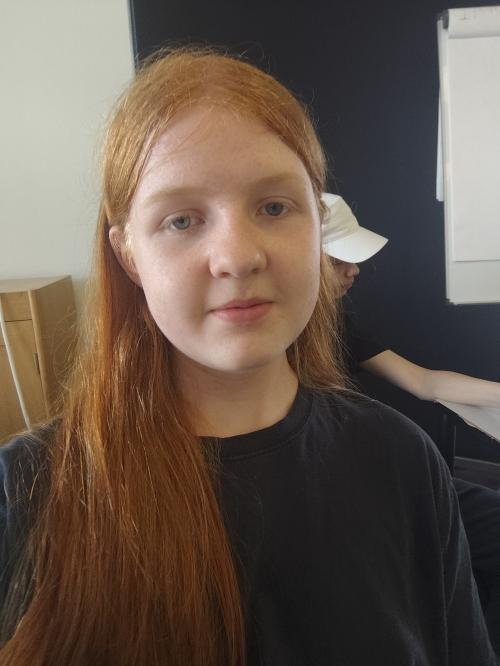

EUX Teknisk-elev med praktisk erfaring inden for kvalitetskontrol samt selvstændig udvikling af software og hardware. Trives med at arbejde tæt på hardwaren – lige fra programmering af lavniveausystemer til at sikre, at produktionen kører uforstyrret på værkstedsgulvet. Selvlært i Rust, Python og Linux-systemadministration med en stærk vane for at opbygge og fejlfinde komplekse tekniske projekter helt fra bunden.